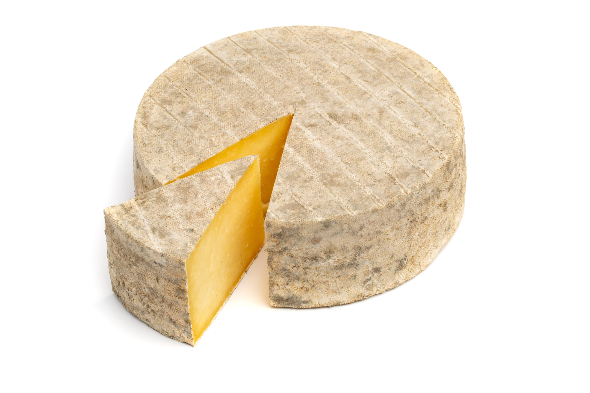

Představte si strmý kopec se sklonem místy až 45 stupňů, bochník sýra vážící téměř čtyři kilogramy a dav odvážlivců (nebo šílenců), kteří jsou ochotni pro něj riskovat zdraví. To není scéna z komedie, ale realita tradičního závodu na kopci Cooper's Hill v Anglii.
Pravidla jsou až prostě jednoduchá. Na vrcholu kopce se vypustí kulatý sýr Double Gloucester, který můžete vidět na obrázku. Sýr dostane vteřinový náskok a začne se nekontrolovaně řítit dolů. Vteřinu poté vyrazí závodníci, kteří se snaží sýr chytit.
Hlavní cena je možná trochu úsměvná vzhledem k vynaloženému úsilí – vítěz získá právě ten bochník sýra, který honil. Pro účastníky jde však především o prestiž, adrenalin a zápis do historie této staleté tradice, jejíž kořeny sahají minimálně do 15. století.
Historie